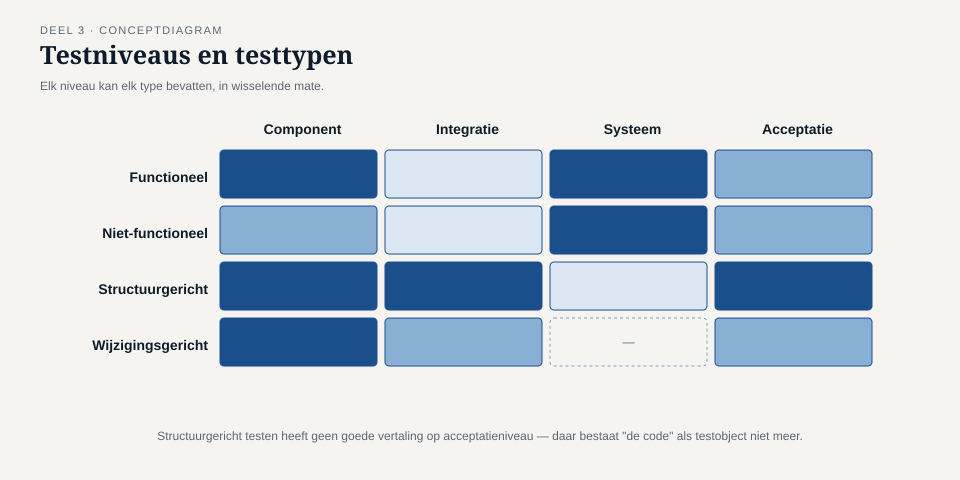

Deel 3 — Testen in de levenscyclus
Reader · Ductus-cursus Testen en Kwaliteitsborging · niveau 1 (fundament) · deel 3 van 30
Dit deel sluit bevinding T3: WGP 2.0 werd getest tegen een functioneel ontwerp van veertien maanden oud, terwijl drie goedgekeurde wijzigingen al wél in de bouw zaten.
Leerdoelen
Na dit deel kun je:
- de samenhang tussen ontwikkelaanpak en testaanpak uitleggen, voor watervalachtige en voor iteratieve/continue aanpakken;
- de testniveaus onderscheiden en per niveau aangeven welke testbasis, welk testobject en welke typische afwijkingen erbij horen;
- het begrip shift-left toepassen en het onderscheid maken met shift-right;
- testtypen (functioneel, niet-functioneel, structuurgericht, wijzigingsgericht) uit elkaar houden;
- confirmatietesten en regressietesten onderscheiden en toepassen;
- onderhoudstesten plaatsen ten opzichte van nieuwbouwtesten;
- uitleggen waarom een testbasis kan verouderen zonder dat iemand dat opmerkt, en hoe je dat voorkomt.
Studielast: één dagdeel klassikaal, circa drie uur zelfstudie.
1. Een testbasis van veertien maanden oud
Toen Jelle Bakker het functioneel ontwerp van WGP 2.0 voor het eerst kreeg, was het versie 1.0, gedateerd op de kick-off. Tegen de tijd dat de acceptatietest begon, achttien maanden later, waren er drie formeel goedgekeurde wijzigingsverzoeken doorgevoerd — allemaal in de bouw, correct, door een team dat zijn werk goed deed.
Het testteam kreeg bij de start van de acceptatietest hetzelfde document als Jelle op dag één. Niemand had de wijzigingsverzoeken erin verwerkt, omdat niemand dat als iemands taak had aangewezen. Het document zag er nog precies zo gezagvol uit als altijd: een pdf met een versienummer, een goedkeuringsstempel, een inhoudsopgave. Niets aan de buitenkant verried dat het drie wijzigingen achterliep op de werkelijkheid die het moest beschrijven.
Twee van de drie wijzigingen waren onschuldig. De derde betrof precies de regel over mutaties met terugwerkende kracht — de regel die uiteindelijk de storing veroorzaakte.

Kernzin — Een testbasis veroudert niet met een knal maar geruisloos, wijziging voor wijziging, en het document blijft er precies zo gezaghebbend uitzien als op dag één.
Dit is bevinding T3. Zij is nauw verwant aan T1 uit deel 2, met een belangrijk verschil: T1 ontstaat doordat een verwijzing nooit is gelegd; T3 ontstaat doordat een verwijzing wél lag, maar wees naar iets wat niet meer klopte. Een verstopte fout, geen ontbrekende.
2. Testen en de ontwikkelaanpak
2.1 Watervalachtige aanpakken
Bij een sequentiële aanpak — eerst analyseren, dan ontwerpen, dan bouwen, dan testen — ligt de verleiding voor de hand: testactiviteiten mee laten schuiven met de fase, dus pas écht beginnen als de bouw klaar is. Deel 2 heeft al laten zien waarom dat een denkfout is: testanalyse en -ontwerp kunnen en horen te beginnen zodra er een concept-testbasis ligt.
Het reële risico van watervalachtige aanpakken zit niet in de volgorde van bouwen, maar in de lengte van de periode waarin de testbasis kan verouderen zonder dat iemand het merkt. Hoe langer de doorlooptijd tussen "testbasis vastgesteld" en "testen uitvoeren", hoe groter de kans op een T3-situatie.
2.2 Iteratieve en continue aanpakken
In scrum, SAFe en vergelijkbare werkwijzen is de testbasis per definitie korter geldig: een user story met acceptatiecriteria wordt binnen één sprint gebouwd en getest. Dat verkleint het T3-risico aanzienlijk — niet omdat agile teams zorgvuldiger zijn, maar omdat de tijd waarin een testbasis kan verouderen simpelweg korter is.
Wat er wél overblijft: de acceptatiecriteria van een oude story kunnen alsnog verouderen wanneer een latere story het gedrag wijzigt zonder dat de eerdere story's tests worden herzien. Dit heet regressierisico op backlogniveau, en het is de agile variant van T3 — kleiner van omvang, maar structureel aanwezig zodra een systeem meer dan een paar sprints meegaat. ↗ scrumcursus behandelt de backloghygiëne die dit voorkomt; hier behandelen we het gevolg voor de testaanpak.
2.3 Shift-left
Shift-left betekent: testactiviteiten zo vroeg mogelijk in de levenscyclus starten, in plaats van ze te laten wachten op een af product. Concreet: meelezen bij het opstellen van acceptatiecriteria, testgevallen ontwerpen naast de bouw in plaats van erna, statisch testen op elk document dat als testbasis gaat dienen (deel 4).
Shift-left is geen technisch trucje maar een organisatorische keuze: het vereist dat de tester wordt uitgenodigd bij refinement en ontwerpoverleg, niet pas bij de oplevering. Bij Meridiaan bestond die uitnodiging voor WGP 2.0 niet — de testfunctie werd pas ingeschakeld toen er iets was om te testen.
2.4 Shift-right
Het spiegelbeeld: informatie die ná livegang wordt verzameld — monitoring, foutregistratie, gebruikersgedrag — als bron van testkennis gebruiken. Shift-right vervangt vooraf testen niet; het erkent dat sommige risico's pas onder echte belasting, met echte data en echte gebruikers zichtbaar worden. ↗ deel 28 (niveau 3) behandelt dit volledig als "kwaliteit in productie".

Belangrijk voor niveau 1: shift-right is geen excuus om vooraf minder te testen. Bij een systeem dat aanspraken vastlegt, is "we zien het wel in productie" geen aanvaardbare testaanpak voor de kernberekening — wel voor bijvoorbeeld een nieuwe indeling van een informatiescherm.
3. Testniveaus
Een testniveau is een gegroepeerde verzameling testactiviteiten, georganiseerd rond een bepaald object en een bepaalde testbasis.
| Niveau | Testobject | Typische testbasis | Wie test doorgaans | Typische afwijking |
|---|---|---|---|---|
| Componenttest | een enkele module, klasse of functie | technisch ontwerp, code zelf | ontwikkelaar | logica-fout binnen één onderdeel |
| Integratietest | samenwerking tussen componenten of systemen | koppelvlakontwerp, architectuur | ontwikkelaar, soms apart team | verkeerde aanname over het koppelvlak |
| Systeemtest | het systeem als geheel | functioneel en niet-functioneel ontwerp | testteam | gedrag dat pas op systeemniveau ontstaat |
| Acceptatietest | het systeem in de bedrijfscontext | eisen, bedrijfsprocessen, wetgeving | opdrachtgever, gebruikers | het systeem doet wat er staat, niet wat nodig is |

3.1 Waarom deze indeling meer is dan een rijtje
Elk niveau heeft zijn eigen testbasis, en dat is precies waarom afwijkingen zich op een specifiek niveau concentreren. De tegenstrijdigheid in het functioneel ontwerp van WGP 2.0 kon onmogelijk op componentniveau gevonden worden — daar bestaat het document niet als testbasis. Zij hoorde bij de systeem- en acceptatietest, en werd daar node niet gevonden omdat de testbasis verouderd was (T3) én niet gereviewd (T4, deel 4).
Vuistregel: als een afwijking op het verkeerde niveau wordt gezocht, wordt zij niet gevonden, ongeacht hoeveel tijd je aan dat niveau besteedt.
3.2 Acceptatietesten nader bekeken
Binnen de acceptatietest bestaan gangbare varianten, die bij Meridiaan alle drie voorkomen maar zelden als zodanig worden benoemd:
- Functionele acceptatietest — doet het systeem wat de eisen zeggen?
- Operationele acceptatietest — kan de beheerorganisatie het systeem daadwerkelijk draaien (back-ups, uitwijk, monitoring, batchverwerking)? Dit is precies het gebied van bevinding T5 (deel 8).
- Regelgevings- of contractuele acceptatietest — voldoet het aan wat een wet, toezichthouder of contract vereist? ↗ deel 23–24 in niveau 3.
Bij WGP 2.0 werd alleen de eerste variant uitgevoerd. De operationele acceptatietest — waarin de nachtelijke batchverwerking naar de kernadministratie beproefd zou zijn — vond nooit plaats. Dat is een andere ingang tot dezelfde bevinding als T5 en T7.
4. Testtypen
Waar een testniveau bepaalt waar je test, bepaalt een testtype waarnaar je kijkt. Eén testniveau kan meerdere testtypen bevatten.
- Functioneel testen — doet het systeem wat het moet doen? Het merendeel van de 312 WGP-testgevallen viel hieronder.
- Niet-functioneel testen — hóe doet het systeem het: snel genoeg, veilig genoeg, bruikbaar genoeg, beschikbaar genoeg? Volledig uitgewerkt in deel 19 (niveau 2).
- Structuurgericht (white-box) testen — is elk pad, elke tak, elke voorwaarde in de code geraakt? Deel 6.
- Wijzigingsgericht testen — confirmatie- en regressietesten, zie hieronder.

5. Confirmatietesten en regressietesten
Dit onderscheid wordt op het examen vaker fout beantwoord dan bijna enig ander begrippenpaar, en het is in de praktijk minstens zo verwarrend.
Confirmatietest (ook wel hertest): een eerder gefaalde test opnieuw uitvoeren, nadat de gevonden afwijking is hersteld, om vast te stellen of precies dát ene probleem nu is opgelost.
Regressietest: opnieuw testen van functionaliteit die niet is gewijzigd, om vast te stellen dat een wijziging elders geen ongewenste neveneffecten heeft veroorzaakt.
| Confirmatietest | Regressietest | |
|---|---|---|
| Vraag | Is déze afwijking nu weg? | Is er ergens anders iets stukgegaan? |
| Testgevallen | dezelfde als waar de afwijking in werd gevonden | een bredere, vaak vaste selectie |
| Wanneer | direct na een herstel | na elke wijziging, ook een schijnbaar geïsoleerde |
Bij WGP 2.0 werd de tegenstrijdigheid in de deeltijdregel wél hersteld en herbevestigd (confirmatietest, correct uitgevoerd) — maar het herstel raakte een module die de terugwerkende-krachtberekening deelde. Er is geen regressietest op die module uitgevoerd, omdat niemand had vastgesteld dat de twee gebieden met elkaar samenhingen. Regressietesten vereisen dus zicht op samenhang, en dat zicht is precies wat traceerbaarheid (deel 2) mogelijk maakt.
Kernzin — Een confirmatietest bewijst dat je hebt opgelost wat je dacht op te lossen. Een regressietest bewijst dat je daarbij niets anders hebt stukgemaakt. Het eerste zonder het tweede is een halve garantie.
6. Onderhoudstesten
Testen bij wijziging van een bestaand, al levend systeem — in tegenstelling tot nieuwbouw. Kenmerken die het onderscheiden:
- De testbasis is vaak minder compleet dan bij nieuwbouw: oorspronkelijke documentatie is verouderd of kwijt, en "hoe het hoort" wordt afgeleid van "hoe het nu werkt" — met het risico dat een bestaande afwijking als bedoeld gedrag wordt overgenomen.
- Impactanalyse is het startpunt: wat kan deze wijziging allemaal raken, direct en indirect? Traceerbaarheid (deel 2) is hier het instrument.
- De aanleiding varieert: een geplande wijziging, een migratie, een noodzakelijke correctie, of het buiten gebruik stellen van functionaliteit.
Meridiaan's Werkgeversportaal 1.0 draait sinds 2013 naast WGP 2.0 nog steeds voor een deel van de werkgevers. Elke wijziging daaraan is per definitie onderhoudstesten, met een extra complicatie: de oorspronkelijke bouwers zijn niet meer in dienst, en de testbasis bestaat feitelijk uit het systeem zelf plus de ervaring van Astrid Poelman.
7. TMAP-lens
Hoe heet dit daar. Testniveaus verschijnen in TMAP als teststages, met een vergelijkbare opbouw (team test, business test, deploy for business test). Confirmatie- en regressietesten heten er meestal gewoon zo, met een sterkere nadruk op geautomatiseerde regressiesets als continu vangnet.
Waar het werkelijk anders is. TMAP benadrukt sterker dat testniveaus in een cross-functioneel team niet strikt na elkaar maar grotendeels gelijktijdig lopen, gedragen door verschillende teamleden tegelijk, in plaats van als opeenvolgende overdrachtsmomenten tussen aparte teams. Shift-left is in de TMAP-gedachte minder een aparte praktijk en meer de standaardtoestand: als kwaliteit ingebouwd wordt door het hele team, is er per definitie geen moment waarop "het testen" nog moet beginnen.
Voor Meridiaan is dat verschil zichtbaar in de vergelijking tussen WGP 2.0 (aparte fasen, aparte overdrachten, testen als eindstation) en het latere Programma Mutatieplatform in niveau 2, waar teams welbewust naar de TMAP-gedachte toegroeien.
8. Examenaansluiting
Dit deel dekt CTFL v4.0, hoofdstuk 2: testen binnen de softwareontwikkelingslevenscyclus, de vier testniveaus, testtypen, onderhoudstesten. Overwegend K2-leerdoelen: het toepassen van het juiste niveau of type op een gegeven scenario.
Veelgemaakte examenfouten:
- Componenttest en integratietest verwisselen wanneer de vraag over een koppelvlak gaat tussen twee delen van hetzelfde systeem — dat blijft integratietest, ook al lijkt het "intern".
- Confirmatietest en regressietest verwisselen. Vuistregel: gaat de vraag over "is déze fout weg", dan confirmatie; gaat het over "is er iets anders stuk", dan regressie.
- Shift-left interpreteren als "sneller testen" in plaats van "eerder beginnen". Dit zijn niet hetzelfde.
Deze cursus bereidt voor op het examen en vervangt het officiële examenmateriaal niet.
9. Kruisverwijzingen
- ↗ Scrum: backloghygiëne en het voorkomen van regressierisico op backlogniveau.
- ↗ SAFe: hoe testniveaus zich verhouden tot een release train; deel 18 (niveau 2) bouwt hierop voort.
- ↗ Software-architectuur: koppelvlakontwerp als testbasis voor de integratietest.
- ↗ OutSystems: geautomatiseerde regressiesets in een low-code omgeving.
Kernbegrippen
testbasis-veroudering · shift-left · shift-right · testniveau (component, integratie, systeem, acceptatie) · functionele, operationele en regelgevings-acceptatietest · testtype (functioneel, niet-functioneel, structuurgericht, wijzigingsgericht) · confirmatietest · regressietest · impactanalyse · onderhoudstesten
Samenvatting in vijf zinnen
- Een testbasis veroudert geruisloos, en het document blijft er even gezaghebbend uitzien terwijl het achterloopt op de werkelijkheid.
- Hoe langer de periode tussen het vaststellen van de testbasis en het testen zelf, hoe groter het risico dat zij intussen verouderd is.
- Elk testniveau heeft zijn eigen testbasis en zijn eigen typische afwijkingen; zoeken op het verkeerde niveau levert niets op.
- Een confirmatietest bewijst dat de gevonden fout weg is; een regressietest bewijst dat er niets anders stuk is gegaan — het eerste zonder het tweede is een halve garantie.
- Onderhoudstesten begint bij impactanalyse, en die is alleen mogelijk met de traceerbaarheid uit deel 2.